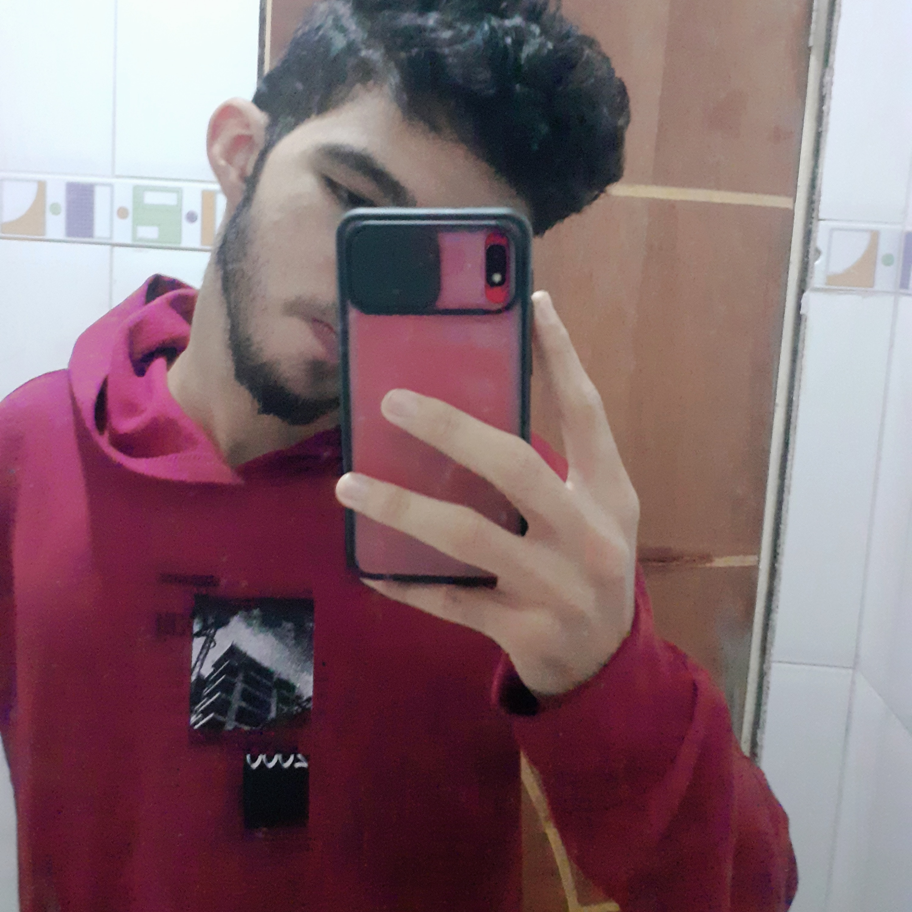

Depoimentos dos alunos
-

Jean Bento
"Esse projeto nos ajudou a perceber que nem sempre devemos ficar preso na rotina. Devemos diferenciar e tentar coisas novas."
-

Ezequias Melo
"esse foi um "pequeno" e ganancioso projeto. a participação e dedicação de todos os alunos envolvidos foi a chave para garantir a conclusão e eficácia de tudo."
-

Isabela Costa
"ao elaborar o projeto acabamos adquirindo conhecimento sobre esse tema tão importante que é a energia sustentável e tudo relacionado a ela. enfim, ansiosa para ver o resultado de todo esse trabalho."
-

Phellipy Silva
"a feira de conhecimento nos proporcionou o saber de assuntos que vão além da escola. nos fez merguharr no mundo da tecnologia."